Visualization
Jeff Goldsmith, Fabian Scheipl
2026-09-03
Source:vignettes/x04_Visualization.Rmd
x04_Visualization.RmdThe tidyfun package is designed to
facilitate functional data analysis in R,
with particular emphasis on compatibility with the
tidyverse. In this vignette, we illustrate
data visualization using tidyfun.
We’ll draw on the tidyfun::dti_df and the
tidyfun::chf_df data sets for examples.
Plotting with ggplot2
ggplot2 is a powerful framework for
visualization. In this section, we’ll assume some basic familiarity with
the package; if you’re new to ggplot2, this primer may be
helpful.
tidyfun provides
tf_ggplot() as the primary interface for plotting
functional data with ggplot2. It works
just like ggplot(), but understands tf vectors
– use the tf aesthetic to map a tf column to
the plot, then add standard ggplot2 geoms
(geom_line, geom_point,
geom_ribbon, etc.).
For heatmaps, use gglasagna; for
sparklines / glyphs on maps, use
geom_capellini (these use their own
specialized stats and are called directly without
tf_ggplot). The older geoms
geom_spaghetti,
geom_meatballs, and
geom_errorband remain available for
backward compatibility.
tf_ggplot with standard geoms
One of the most fundamental plots for functional data is the
spaghetti plot, which is implemented in
tidyfun and
ggplot2 through tf_ggplot() +
geom_line():
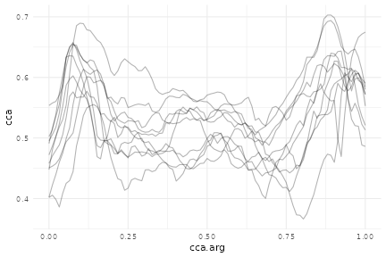
Adding geom_point() to geom_line() shows
both the curves and the observed data values:
dti_df[1:3,] |>
tf_ggplot(aes(tf = rcst)) + geom_line(alpha = .3) + geom_point(alpha= .3)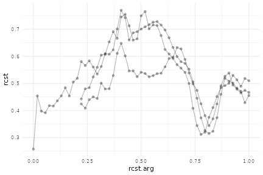
Using with other ggplot2 features
tf_ggplot() plays nicely with standard
ggplot2 aesthetics and options.
You can, for example, define the color aesthetic for plots of
tf variables using other observations:
chf_df |>
filter(id %in% 1:5) |>
tf_ggplot(
aes(tf = tf_smooth(activity, f = .05), # smoothed inputs for clearer viz
color = gender)) +
geom_line(alpha = 0.3)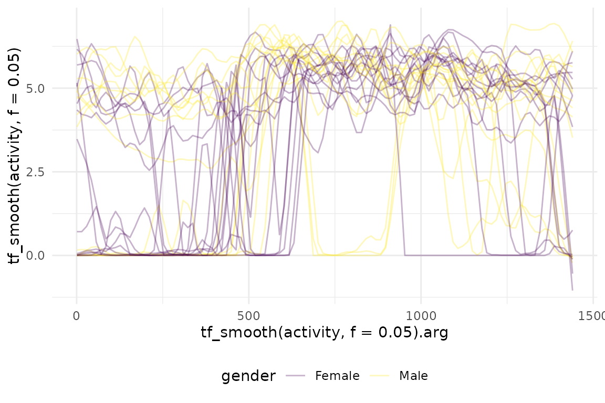
… or use facetting:
chf_df |>
filter((id %in% 1:10) & (day %in% c("Mon", "Sun"))) |>
tf_ggplot(aes(tf = tf_smooth(activity, f = .05), color = gender)) +
geom_line(alpha = 0.3, lwd = 1) +
facet_grid(~day)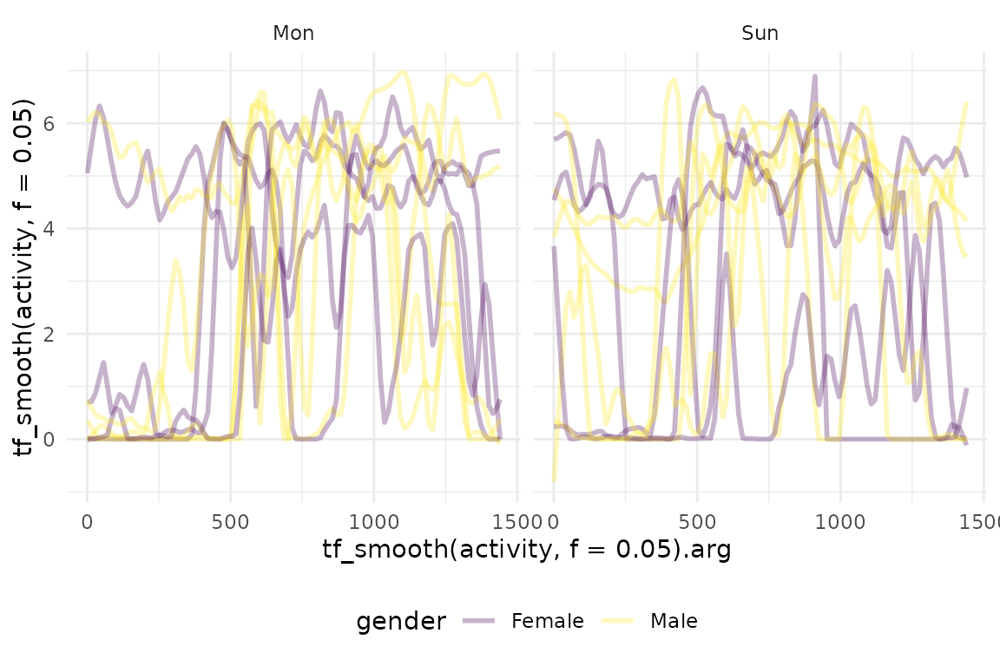
Another example, using the DTI data, is below.
dti_df |>
tf_ggplot(aes(tf = cca, col = case, alpha = 0.2 + 0.4 * (case == "control"))) +
geom_line() + facet_wrap(~sex) +
scale_alpha(guide = "none", range = c(0.2, 0.4))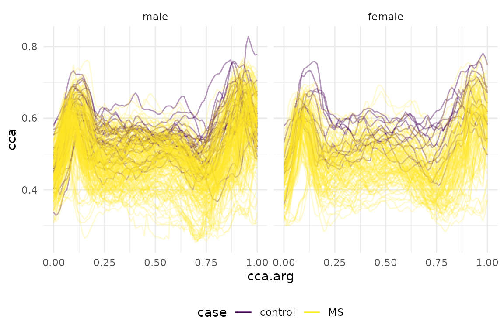
Together with tidyfun’s tools for
functional data wrangling and summary statistics, the integration with
ggplot2 can produce useful exploratory
analyses, like the plot below showing group-wise smoothed and unsmoothed
mean activity profiles:
chf_df |>
group_by(gender, day) |>
summarize(mean_act = mean(activity),
.groups = "drop_last") |>
mutate(smooth_mean = tfb(mean_act, verbose = FALSE)) |>
filter(day %in% c("Mon", "Sun")) |>
tf_ggplot(aes(color = gender)) +
geom_line(aes(tf = smooth_mean), linewidth = 1.25) +
geom_line(aes(tf = mean_act), alpha = 0.1) +
geom_point(aes(tf = mean_act), alpha = 0.1, size = .1) +
facet_grid(day~.)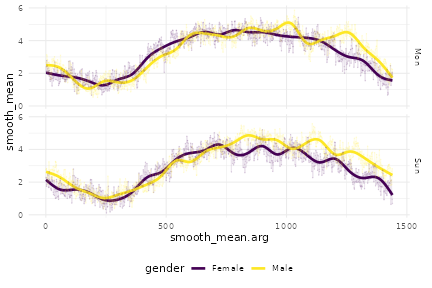
… or the plot below showing group-wise mean functions +/- twice their pointwise standard errors:
dti_df |>
group_by(sex, case) |>
summarize(
mean_cca = mean(tfb(cca, verbose = FALSE)), #pointwise mean function
sd_cca = sd(tfb(cca, verbose = FALSE)), # pointwise sd function
.groups = "drop_last"
) |>
group_by(sex, case) |>
mutate(
upper_cca = mean_cca + 2 * sd_cca,
lower_cca = mean_cca - 2 * sd_cca
) |>
tf_ggplot() +
geom_line(aes(tf = mean_cca, color = sex)) +
geom_ribbon(aes(tf_ymin = lower_cca, tf_ymax = upper_cca, fill = sex), alpha = 0.3) +
facet_grid(sex ~ case)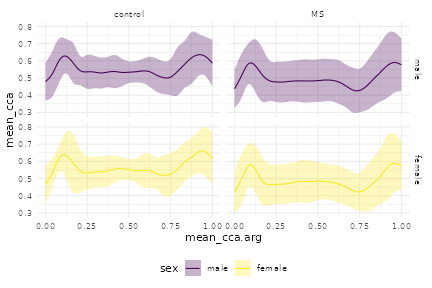
Multivariate functional data (tf_mv)
Vector-valued functional data – functions \(f: \mathbb{R} \to \mathbb{R}^d\) stored as
tf_mv vectors (see the tf package and its
“Vector-valued functional data” article) – can be mapped with the
tf aesthetic just like univariate tf columns.
tf_ggplot() picks a display that mirrors tf’s
base-R plot.tf_mv():
- for two-component objects (
d == 2) the default is a trajectory: the planar curve \(x(t)\) vs \(y(t)\), drawn withgeom_path(); - otherwise the default is a facet display: value-vs-arg curves with one group per curve and component.
We use the built-in tf::gait data: hip and knee joint
angles for 39 boys across one gait cycle, bundled into a single
two-component tfd_mv.
data(gait, package = "tf")
gait_mv <- tfd_mv(list(hip = gait$hip_angle, knee = gait$knee_angle))
gait_df <- tibble(id = factor(seq_along(gait_mv)), mv = gait_mv)The facet display shows one panel per component
(value versus cycle phase). Pass type = "facet", which
unnests the data to a long form with a .component column;
add facet_wrap(~ .component) yourself:
gait_df |>
tf_ggplot(aes(tf = mv), type = "facet") +
geom_line(alpha = 0.3) +
facet_wrap(~ .component, scales = "free_y")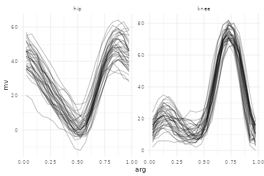
The trajectory display (the d == 2
default) collapses the phase axis and draws each subject’s
(hip, knee) cyclogram – the characteristic gait “butterfly”
loop. Use geom_path(), not
geom_line(): geom_path() connects
points in argument (time) order, while geom_line() would
re-sort by x and mangle any non-monotone curve.
gait_df |>
tf_ggplot(aes(tf = mv)) +
geom_path(alpha = 0.3) +
labs(x = "hip angle", y = "knee angle")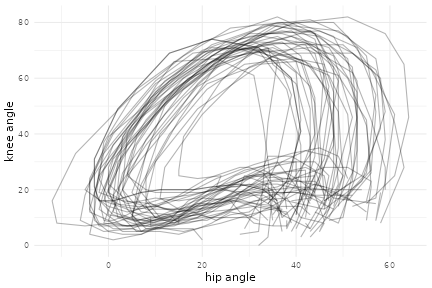
Equivalently, you can map two separate univariate tf
columns (or two components) to the tf_x and
tf_y aesthetics – handy when the coordinates live in
different columns:
tibble(hip = gait$hip_angle, knee = gait$knee_angle) |>
tf_ggplot(aes(tf_x = hip, tf_y = knee)) +
geom_path(alpha = 0.3)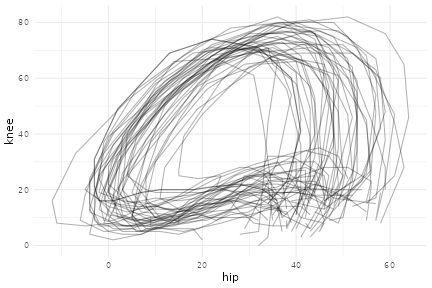
autoplot() provides one-line shortcuts – a trajectory
for d == 2 and a faceted display otherwise – and
autolayer() returns a single layer you can add to an
existing plot:
autoplot(gait_mv)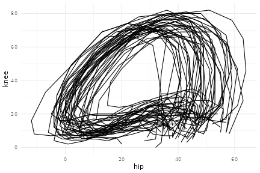
Colouring trajectories by argument
A trajectory plot hides where along the domain each point
lies – the argument (here: the phase of the gait cycle) is not shown on
any axis. Every tf_ggplot() layer provides a column
.arg holding the argument value of each evaluation point,
so you can map it to the colour aesthetic to colour each
segment of a curve by its position along the domain.
autoplot() offers the same via
colour_by_arg = TRUE:
gait_df |>
tf_ggplot(aes(tf = mv, colour = .arg)) +
geom_path() +
scale_colour_viridis_c("phase") +
labs(x = "hip angle", y = "knee angle")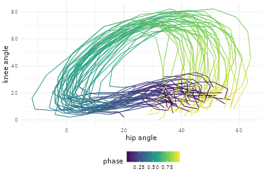
autoplot(gait_mv, colour_by_arg = TRUE)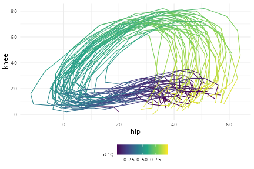
Phase-plane plots
Phase-plane plots (see fda::phaseplanePlot()) display a
univariate function through two of its derivatives, most
commonly the first derivative (velocity) against the second
(acceleration), so that cyclic or oscillatory behaviour shows up as
loops. tf_phaseplane() turns a tf vector into
a two-component tf_mv object of derivatives (components
D1 and D2 by default; use order
to pick other derivatives, 0 denoting the function itself)
that can be plotted as a trajectory like any other
tf_mv:
# derivatives are computed by finite differences, so we use smoothed knee
# angles on a fine grid
knee_smooth <- tfb(gait$knee_angle, k = 12, verbose = FALSE) |>
tfd(arg = seq(0.025, 0.975, by = 0.005))
knee_pp <- tf_phaseplane(knee_smooth)
knee_pp
## tfd_mv<d=2>[39] (D1, D2): [0.025, 0.975] -> [-586.5944, 462.8204] x [-7663.794, 9187.194]
## components based on 191 evaluations each, interpolation by tf_approx_linear
## [1]: ▆▆▅▅▅▅▅▅▅▅▅▆▆▆▇▇▇▇▆▅▄▃▂▂▂▃ | ▄▄▄▄▄▄▄▅▅▅▅▅▅▅▅▄▄▃▃▂▂▃▄▅▅▅
## [2]: ▆▆▅▄▄▄▄▄▅▅▅▅▆▇███▇▆▅▄▃▂▂▃▃ | ▄▃▃▃▄▅▅▅▅▄▅▅▆▆▆▄▃▂▂▂▂▃▄▅▅▅
## [3]: ▆▆▅▅▄▄▄▄▄▄▅▅▆▇███▇▆▅▄▂▁▁▂▃ | ▄▃▃▃▄▄▄▄▅▅▅▅▆▇▆▄▃▃▂▂▁▂▄▆▅▅
## [4]: ▆▆▅▅▄▄▄▅▅▅▅▆▆▇██▇▆▅▄▃▁▁▂▃▄ | ▄▃▃▃▄▄▅▅▄▄▅▆▆▆▅▃▂▂▃▃▁▁▅█▇▅
## [5]: ▅▅▅▅▅▅▅▅▅▅▅▆▆▇██▇▆▅▄▃▁▁▂▃▄ | ▄▄▄▄▅▅▄▄▄▅▅▅▆▆▆▄▃▂▂▂▁▂▅█▇▅
## [6]: ▆▅▅▅▅▅▄▄▄▄▅▅▅▆▇▇▇▇▆▆▄▃▂▂▂▂ | ▄▄▄▄▄▄▄▄▄▄▅▅▆▆▆▅▄▃▃▂▂▂▃▄▄▄
##
## [....] (33 not shown)
tibble(id = factor(seq_along(knee_pp)), pp = knee_pp) |>
tf_ggplot(aes(tf = pp, colour = .arg)) +
geom_path(alpha = 0.5) +
geom_hline(yintercept = 0, linetype = 2) +
geom_vline(xintercept = 0, linetype = 2) +
scale_colour_viridis_c("phase") +
labs(x = "knee angle velocity", y = "knee angle acceleration")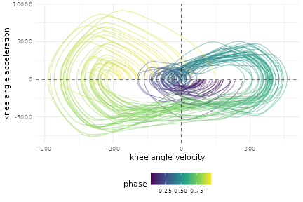
To mark specific argument values as in
fda::phaseplanePlot(), evaluate the phase-plane object at
those points with tf_unnest() (which yields one column per
component for tf_mv input) and add a text layer with its
own data. Here we label the phase-plane of the mean knee angle at every
tenth of the gait cycle:
mean_pp <- tf_phaseplane(mean(knee_smooth))
marks <- tf_unnest(mean_pp, arg = seq(0.1, 0.9, by = 0.1))
tibble(pp = mean_pp) |>
tf_ggplot(aes(tf = pp)) +
geom_path() +
geom_hline(yintercept = 0, linetype = 2) +
geom_vline(xintercept = 0, linetype = 2) +
geom_label(
data = marks, aes(x = D1, y = D2, label = arg),
inherit.aes = FALSE
) +
labs(x = "knee angle velocity", y = "knee angle acceleration")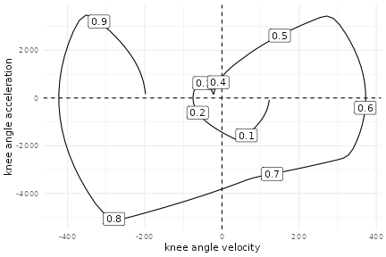
To unnest a tf_mv column to a “wide” long table yourself
(one value column per component), use tf_unnest():
Functional data boxplots with geom_fboxplot
“Boxplots” for functional data are implemented in
tidyfun through geom_fboxplot(). They show the
deepest function (using modified band depth, "MBD", by
default) as a thick median curve, a filled central ribbon spanning the
pointwise range of the deepest half of the sample (by default), and
outer fence lines obtained by inflating that central envelope by a
factor of coef = 1.5. Curves that leave the fence envelope
anywhere are flagged as outliers and drawn separately.
Like geom_boxplot(), the layer follows the usual
ggplot2 interface closely. Grouping works
naturally through colour, fill, or
group, and the same group colour is reused for the ribbon,
the outlier curves, and the median if a group colour/fill is mapped;
otherwise, the median defaults to black.
dti_df |>
tf_ggplot(aes(tf = cca, fill = case)) +
geom_fboxplot(alpha = 0.35) +
facet_grid(~ sex) + labs(title="MBD-based boxplot")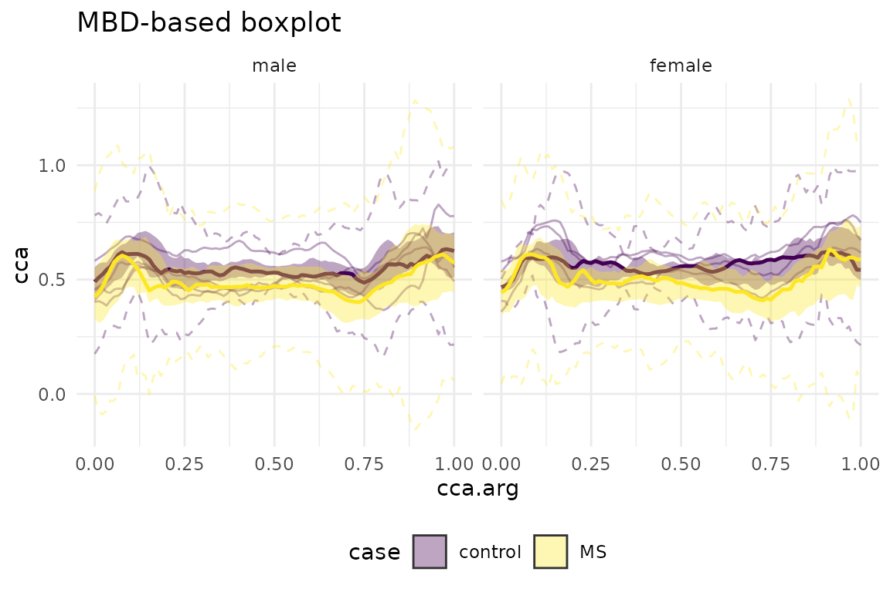
dti_df |>
tf_ggplot(aes(tf = cca, colour = case)) +
geom_fboxplot(depth = "FM", alpha = 0.3) +
facet_grid(~ sex) + labs(title="FM-based boxplot")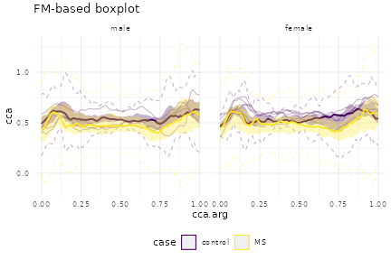
dti_df |>
tf_ggplot(aes(tf = cca, colour = case)) +
geom_fboxplot(depth = "RPD", alpha = 0.3) +
facet_grid(~ sex) + labs(title="RPD-based boxplot")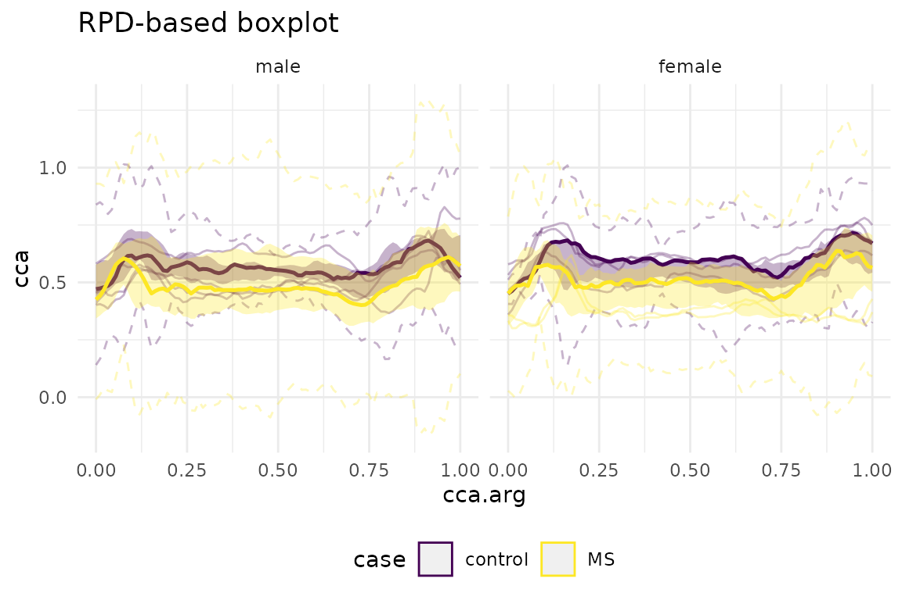
The layer also supports irregular functional data directly:
tf_ggplot(dti_df, aes(tf = rcst)) + geom_fboxplot()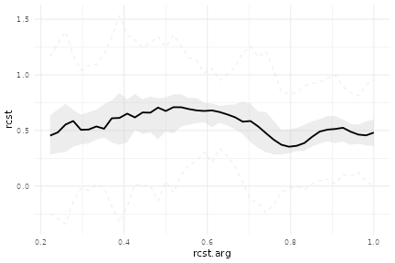
Useful arguments:
tf_ggplot(dti_df, aes(tf = rcst)) +
geom_fboxplot(alpha = .5)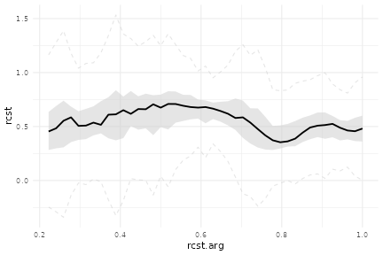
tf_ggplot(dti_df, aes(tf = rcst)) +
geom_fboxplot(alpha = .5, central = .2)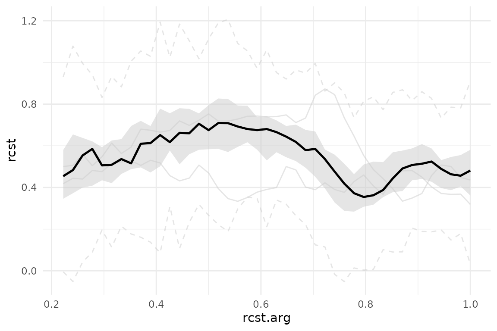
tf_ggplot(dti_df, aes(tf = rcst)) +
geom_fboxplot(alpha = .5, central = .2, outliers = FALSE)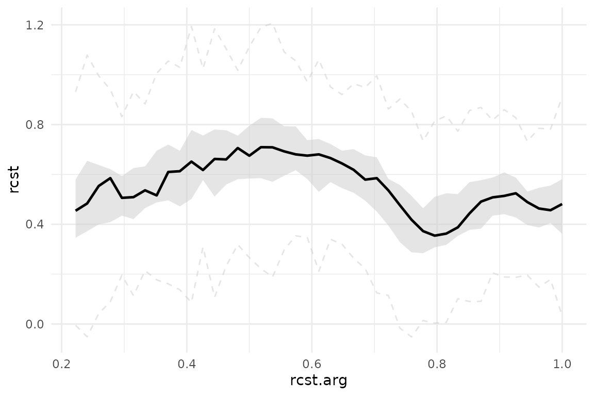
tf_ggplot(dti_df, aes(tf = rcst)) +
geom_fboxplot(orientation = "y", alpha = .3)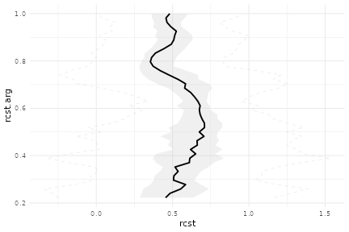
Heatmaps for functional data: gglasagna
Lasagna plots are “a saucy alternative
to spaghetti plots”. They are a variant on a heatmaps which show
functional observations in rows and use color to illustrate values taken
at different arguments. Especially for large samples or noisy data,
lasagna plots can be more informative than spaghetti plots, which can be
hard to read when many curves are plotted together. Lasagna plots also
allow for easy visual comparison of groups of curves, and the
order argument in gglasagna() allows you to
sort the curves by any variable or function of the data, which can help
reveal patterns in the data.
In tidyfun, lasagna plots are
implemented through gglasagna (as well as a basic
plot method, see ?!?). A first example, using the CHF data,
is below.
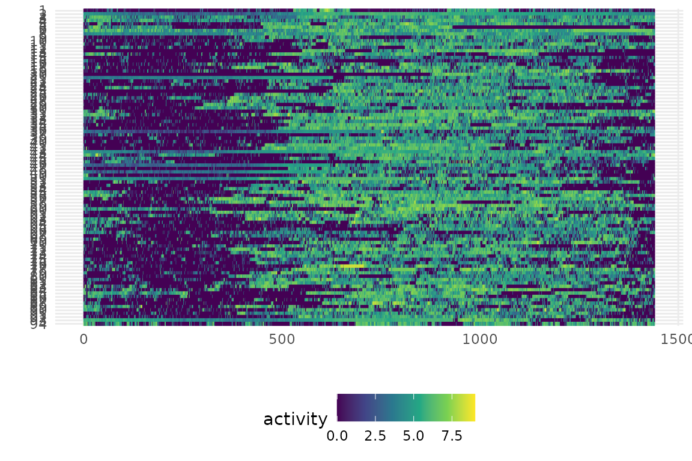
A somewhat more involved example, demonstrating the
order argument and taking advantage of facets, is next.
dti_df |>
gglasagna(
tf = cca,
order = tf_integrate(cca, definite = TRUE), #order by area under the curve
arg = seq(0, 1, length.out = 101)
) +
theme(axis.text.y = element_text(size = 6)) +
facet_wrap(~ case:sex, ncol = 2, scales = "free")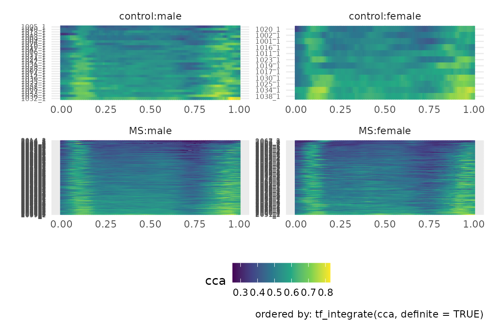
geom_capellini
To illustrate geom_capellini, we’ll start with some data
prep for the iconic Canadian Weather data from
fda:
canada <- data.frame(
place = fda::CanadianWeather$place,
region = fda::CanadianWeather$region,
lat = fda::CanadianWeather$coordinates[, 1],
lon = -fda::CanadianWeather$coordinates[, 2]
)
canada$temp <- tfd(t(fda::CanadianWeather$dailyAv[, , 1]), arg = 1:365)
canada$precipl10 <- tfd(t(fda::CanadianWeather$dailyAv[, , 3]), arg = 1:365) |>
tf_smooth()
## Using `f = 0.15` as smoother span for `lowess()`.
canada_map <-
data.frame(maps::map("world", "Canada", plot = FALSE)[c("x", "y")])Now we can plot a map of Canada with annual temperature averages in red, precipitation in blue:
ggplot(canada, aes(x = lon, y = lat)) +
geom_capellini(aes(tf = precipl10),
width = 4, height = 5, colour = "blue",
line.linetype = 1
) +
geom_capellini(aes(tf = temp),
width = 4, height = 5, colour = "red",
line.linetype = 1
) +
geom_path(data = canada_map, aes(x = x, y = y), alpha = 0.1) +
coord_quickmap()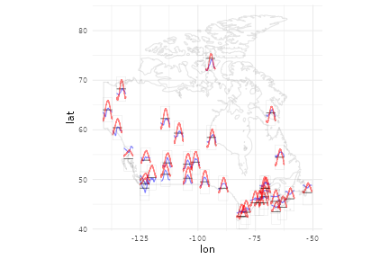
Another general use case for geom_capellini is
visualizing FPCA decompositions:
cca_fpc_tbl <- tibble(
cca = dti_df$cca[1:30],
cca_fpc = tfb_fpc(cca, pve = .8),
fpc_1 = map(coef(cca_fpc), 2) |> unlist(), # 1st PC loading
fpc_2 = map(coef(cca_fpc), 3) |> unlist() # 2nd PC loading
)
# rescale FPCs by sqrt of eigenvalues for visualization
cca_fpcs_1_2 <-
tf_basis(cca_fpc_tbl$cca_fpc, as_tfd = TRUE)[2:3] *
sqrt(attr(cca_fpc_tbl$cca_fpc, "score_variance")[1:2])
# scaled eigenfunctions look like this:
tibble(
eigenfunction = cca_fpcs_1_2,
FPC = factor(1:2)
) |> tf_ggplot() +
geom_line(aes(tf = eigenfunction, col = FPC)) +
geom_hline(yintercept = 0)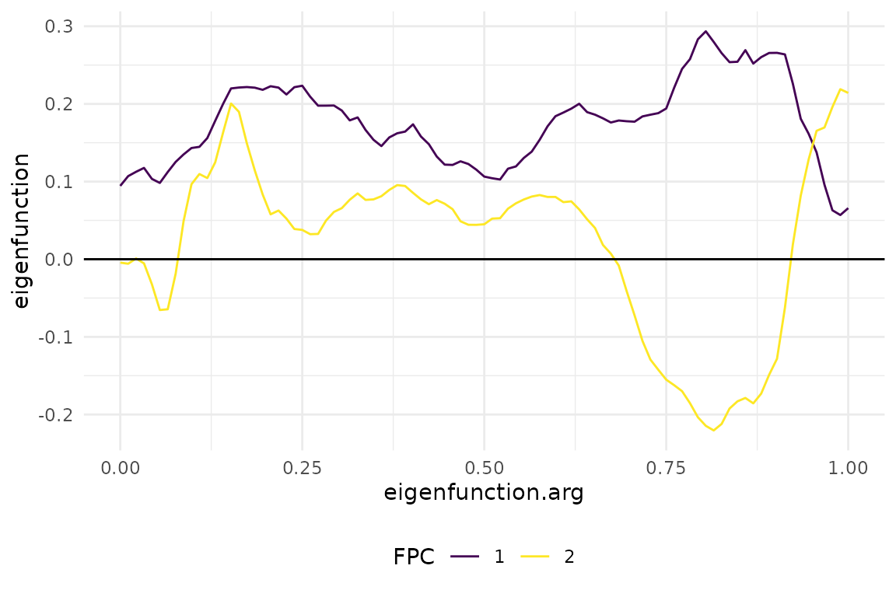
So FPC1 is mostly a horizontal (level) shift, while FPC2 mostly affects the size and direction of the extrema around 0.13 and 0.8.
ggplot(cca_fpc_tbl[1:40,], aes(x = fpc_1, y = fpc_2)) +
geom_point(size = .5, col = viridis(3)[2]) +
geom_capellini(aes(tf =cca_fpc),width = .01, height = .01, line.linetype = 1) +
labs(x = "FPC1 score", y = "FPC2 score")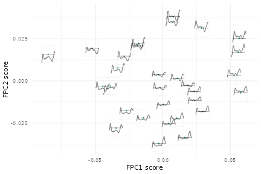
Consequently, we can see here that the horizontal axis representing the 1st FPC scores has the average level of functions increasing from left to right (first FPC function is basically a level shift), while the size and direction of the extrema at around 0.13 and particularly 0.8 change along the vertical axis representing the 2nd FPC scores.Plotting with base R
tidyfun includes several extensions of
base R graphics, which operate on tf vectors. For example,
one can use plot to create either spaghetti or lasagna
plots, and lines to add lines to an existing plot:
cca <- dti_df$cca |>
tfd(arg = seq(0, 1, length.out = 93), interpolate = TRUE)
layout(t(1:2))
plot(cca, type = "spaghetti")
lines(c(median(cca), mean = mean(cca)), col = viridis(3)[c(1, 3)])
plot(cca, type = "lasagna", col = viridis(50))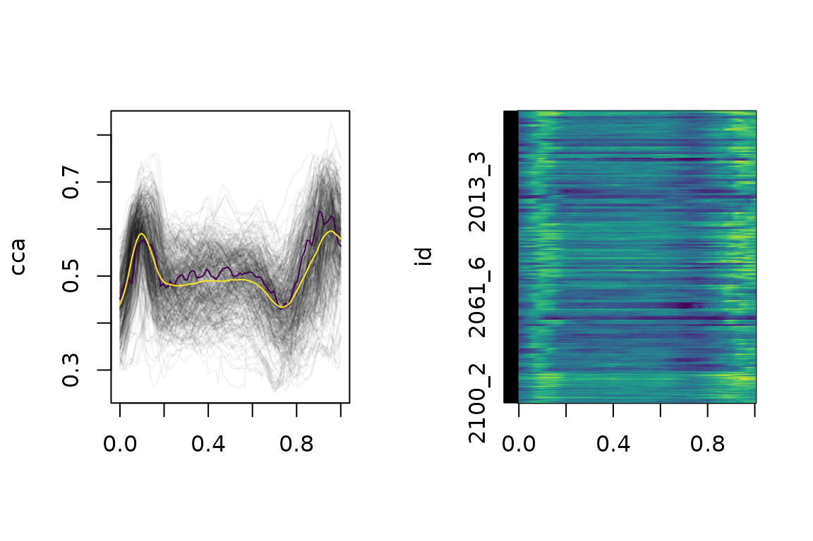
These plot methods use all the same graphics options and
can be edited like other base graphics:
cca_five <- cca[1:5]
cca_five |> plot(xlim = c(-0.15, 1), col = pal_5, lwd = 2)
text(
x = -0.1, y = cca_five[, 0.07], labels = names(cca_five), col = pal_5, cex = 1
)
median(cca_five) |> lines(col = pal_5[3], lwd = 4)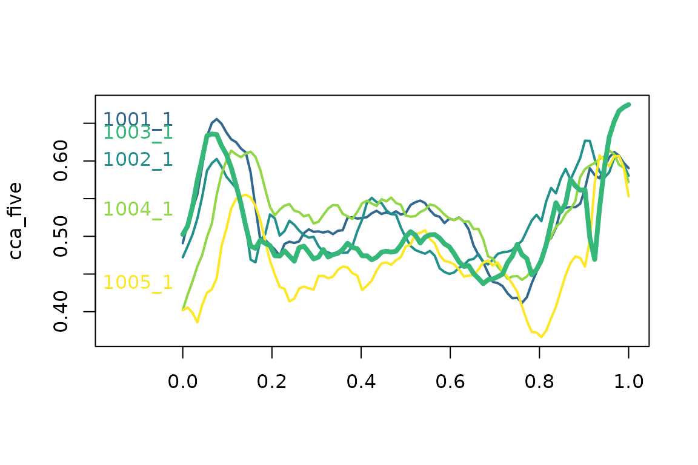
tf also defines a plot method for
tf_registration objects (returned by
tf_register()) for visualizing function alignment
(registration / phase variability). Current versions of tf
return a registration result that stores the aligned curves, inverse
warps, and template and can be inspected directly:
pinch_reg <- tf::pinch |> tfb() |> #smooth before registration for better results
tf_register()
## Percentage of input data variability preserved in basis representation
## (per functional observation, approximate):
## Min. 1st Qu. Median Mean 3rd Qu. Max.
## 99.60 99.70 99.80 99.75 99.80 99.80
pinch_reg
## <tf_registration>
## Call: tf_register(x = tfb(tf::pinch))
## 20 curves on [0, 0.3]
## Components: aligned, inv_warps, template, original data
summary(pinch_reg)
## tf_register(x = tfb(tf::pinch))
##
## 20 curve(s) on [0, 0.3]
##
## Amplitude variance reduction: 96.7%
##
## Inverse warp deviations from identity (relative to domain length):
## 0% 10% 25% 50% 75% 90% 100%
## 0.0329 0.0670 0.0765 0.1161 0.1469 0.1841 0.2104
##
## Inverse warp slopes (1 = identity):
## overall range: [0.143, 7]
## per-curve min slopes:
## 0% 10% 25% 50% 75% 90% 100%
## 0.143 0.143 0.143 0.167 0.200 0.258 0.333
## per-curve max slopes:
## 0% 10% 25% 50% 75% 90% 100%
## 2.0 3.9 7.0 7.0 7.0 7.0 7.0
plot(pinch_reg)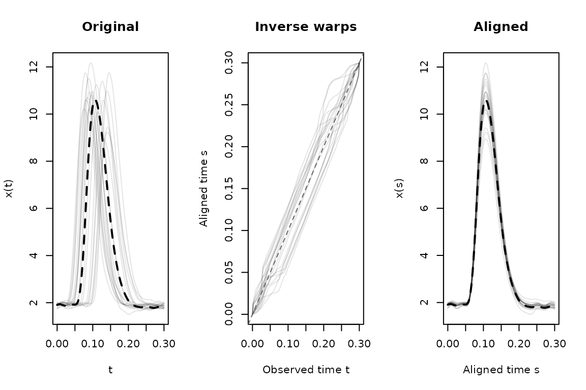
The registered curves, inverse warping functions, and template can also be extracted explicitly for custom plots:
layout(t(1:3))
plot(tf::pinch[1:5], col = pal_5, lwd = 2, points = FALSE)
plot(tf_inv_warps(pinch_reg)[1:5], col = pal_5, lwd = 2, points = FALSE)
abline(c(0, 1), col = "grey", lty = 2)
plot(tf_aligned(pinch_reg)[1:5], col = pal_5, lwd = 2)
lines(tf_template(pinch_reg), col = "black", lwd = 3, lty= 3)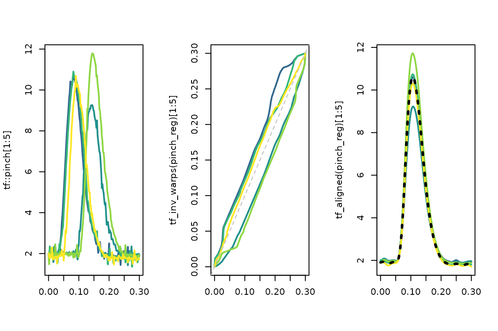